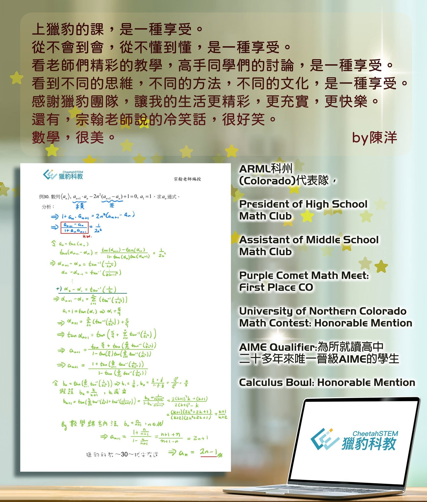

華人菁英 盡在獵豹
陳洋同學，來自美國Colorado，參與獵豹FS高中輕競賽，以及FA02高階競賽課程。
👍ARML科州(Colorado)代表隊
👍President of High School Math Club
👍Assistant of Middle School Math Club
👍Purple Comet Math Meet: First Place CO
👍University of Northern Colorado Math Contest: Honorable Mention
👍AIME Qualifier:為所就讀高中二十多年來唯一晉級AIME的學生
👍Calculus Bowl: Honorable Mention
獵豹的志業是提供華人地區K-12的優質STEM(, Technology, Engineering, Mathematics)教育,讓所有有天賦、有志氣的孩子能不受地域與經濟條件限制，得到第一流的學習資源！
科州(Colorado)不如教育資源豐沛的北加州，較不容易取得菁英教育資源，陳洋媽媽表示，他非常喜歡數學 但苦於缺乏適當的課程，現在終於有這麼好的課可以上了，孩子高興得很！
聰明又積極向學的陳洋為了喜歡獵豹的數學課，還自己加強起中文！
陳同學在校內math club擔任president和TA，各項比賽優異表現，更是學校二十年來首位晉級AIME的學生！
陳同學第一個獵豹課程是FS01（高中輕競賽系列），目前已進入FA02（高階競賽系列），學習十分認真，由最近的數學作業中可看出他的邏輯清晰,條理分明（如附圖)，是個有天份又認真的孩子！
我們非常歡迎像陳同學這樣優秀的孩子們加入！（獵豹將提供各種獎勵與優惠）
陳洋同學在獵豹學習心得:
上獵豹的課，是一種享受。
沒上過中文課的我，會按下暫停鍵，查查數學術語在英文是什麼。很多的觀念，公式和定理，我第一次看到。很多的題目，我第一次接觸。從不會到會，從不懂到懂，是一種享受。看老師們精彩的教學，高手同學們的討論，是一種享受。看到不同的思維，不同的方法，不同的文化，是一種享受。
感謝獵豹團隊，讓我的生活更精彩，更充實，更快樂。
還有，宗翰老師說的冷笑話，很好笑。
數學，很美。
